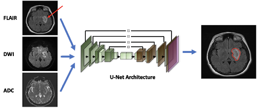

| Paper PDF |

|
Successful delineation of lesions in acute ischemic strokes is essential for increasing the likelihood of positive patient outcomes. Automated stroke lesion segmentation is a useful biomedical tool for predicting patient outcomes and response to treatment. Multimodality imaging techniques are increasingly being introduced into algorithm development. The use of various modalities on the same target provides unique and complementary information. Moreover, multimodal imaging may be beneficial in cases of limited image quality, such as the presence of motion artifacts. In this project, we describe the development and training of a convolutional neural network (CNN) that was used to estimate the location of stroke lesions using three different MRI modalities: diffusion-weighted imaging (DWI), fluid attenuated inversion recovery (FLAIR) imaging, and the apparent fusion diffusion coefficient.
|
|
|
| Paper: |
Code and Data:
|